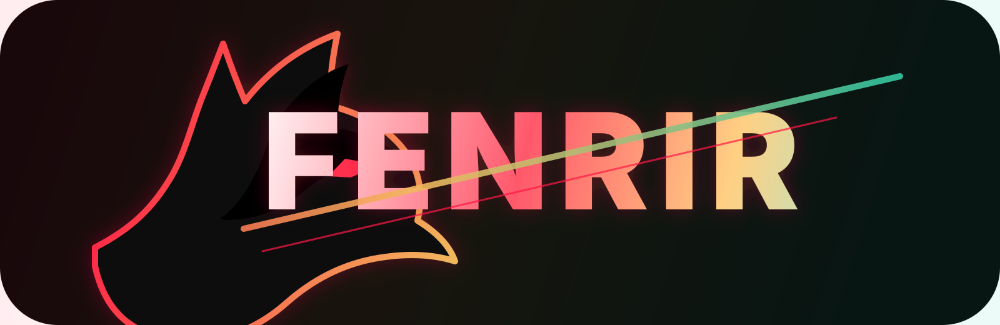

MyFenrir Admin Guidebook
A field manual for protecting the beta room, reviewing new profiles,
cleaning chat, handling bans, and keeping MyFenrir, Telegram, and
Neon Nexus roles clear.
Private alpha GO
Controlled beta GO
Paid public launch gated
Public waitlist:
Request Alpha Access
Admin Role
You are a trusted volunteer admin and community steward protecting
product signal, early adopters, and the room.
You Own Access
Review who gets in, who stays, and which profiles are ready for
the next access tier.
You Own The Room
Delete noise, warn, mute, remove, or ban when the group needs
protection.
You Own Escalation
Route technical, billing, safety, and legal issues to the right
operator path.
Admin standard: when you make a hard call, leave a
short reason another trusted volunteer admin could understand later.
System Map
Keep these surfaces separate. A person can be valid in one context
and still need review in another.
myfenrir.com
Main product and admin dashboard
Domains, locks, billing, dashboard decisions, product operations
Telegram group
Active community and testing room
The live social space you moderate and protect
Telegram Lock
Access bridge into Telegram
Invite rotation, revocation, and stable public join links
Neon Nexus
White-label community gate
Separate member identity, branding, review, and access state
Frisky Dev MCP
Operator and specialist layer
Escalation path for routing tasks, memory, and builder workflows
New Profile Review
Move fast, but do it in a repeatable order.
1. IdentityName, username, profile photo, referral, customer status,
existing relationship.
2. SourceKnown invite, admin referral, customer onboarding, event cohort,
or unknown public link.
3. IntentRelevant question, bug report, intro, quiet observing, or
suspicious promo/link behavior.
4. RiskLow risk, watch, verify manually, remove, or ban.
5. ActionAllow, ask, warn, delete, mute, remove, ban, grant, deny, or
revoke.
6. RecordFor meaningful decisions, leave a short note with action and
reason.
Moderation Ladder
Use the lightest action that protects the room.
Observe / Watch
Weak signal but no harm yet. Let them settle while you watch first
messages.
Ask / Warn
Intent is unclear or behavior is recoverable. Keep the note short
and direct.
Delete / Mute
Clean spam, unsafe links, duplicate clutter, and cooling-off
situations.
Remove / Ban
Use for scams, harassment, impersonation, bypass attempts, or
clear volunteer-admin discretion.
Neon Nexus Split
Neon Nexus is the branded community identity layer, not just the
Telegram group.
MyFenrir Identity
Owner/admin/customer dashboard access. Controls domains, locks,
billing, and operations.
Neon Nexus Identity
Community member verification, provider login, role, review state,
and audit trail.
Telegram Presence
The actual chat/channel presence. It may still require review even
after someone appears in chat.
Daily Workflow
The room should feel alive, not chaotic.
Start Of Day
- Check new joins and pending profiles
- Scan for spam and exposed private info
- Check invite rotation needs
- Review suspicious access attempts
During The Day
- Delete obvious spam quickly
- Respond to genuine early adopters
- Capture blockers with exact URLs/screenshots
- Escalate technical issues
End Of Day
- Summarize bans and removals
- Separate product bugs from moderation
- List follow-ups
- Rotate/revoke links if traffic looked suspicious
Decision Log
Use this for meaningful actions. Short beats perfect.
Date:
Admin:
Surface: MyFenrir / Telegram / Neon Nexus
Profile or handle:
Action: watch / warn / delete / mute / remove / ban / grant / deny /
revoke
Reason:
Evidence:
Follow-up:
Ready-To-Post Admin Copy
Polished messages for the Telegram beta room.
Welcome to the MyFenrir early-adopter group.
This is the live testing room for Fenrir/MyFenrir: access gates, Telegram locks, Neon Nexus community flows, and the admin experience around them.
Please keep the group focused:
- introduce yourself if you are new
- share bugs with clear screenshots or exact steps
- keep promo links and unrelated drops out
- do not repost private invite links
- respect admin cleanup and access decisions
Quick admin check for new profiles:
Please reply with who invited you or what you are here to test in MyFenrir.
This is an early-adopter room, so we review new joins and keep access protected.
Admin cleanup note:
I removed a few messages/accounts to keep the early-adopter room useful and safe.
If you are here for MyFenrir testing, product feedback, or Neon Nexus community access, you are good. Keep it focused and we keep moving.
Access reminder:
This group is not public-open. Spam, suspicious links, impersonation, harassment, invite bypassing, or repeated bad-fit behavior can lead to removal or ban at admin discretion.
We are protecting the early-adopter group so real members can build, test, and give useful feedback.